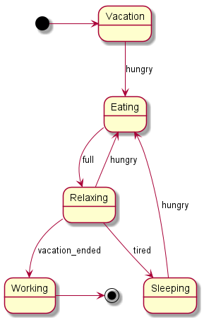

HomeIndex
HomeIndex </>
</>
 Sidesteps
Sidesteps
Sidesteps
Chat GPT [chat_gpt] was used to investigate and implement this solution.
Spring State Machine doesn't have a built-in tool to directly generate UML diagrams from our state machine configuration, so we need to create it manually. There are two possible approaches:
stateMachine.getStates() and
stateMachine.getTransitions()), so it's easier to query and extract this information
directly. Still this may not be suitable for all use cases. If the FSM is configured
dynamically at runtime (e.g., based on external inputs), generating an accurate diagram might
depend on the specific inputs provided during runtimeWe are going to start with the runtime introspection approach since it's simpler to implement and captures the actual state machine configuration at runtime.
Git commit:
c22be58cbf1ffdb0bf1f1a048408ca57823543fdfsm-diagram-generator module added
Here's the Maven project structure:
>tree /f
└───spring-sm-study
│ pom.xml
├───fsm-diagram-generator
│ │ pom.xml
│ └───src
│ └───main
│ └───java
│ └───springsmdiagramgenerator
│ StateMachineDiagramGenerator.java
│ Utils.java
└───module01
│ pom.xml
└───src
└───main
└───java
└───springsmstudy01
Main.java
SimplestStateMachineConfiguration.javaspring-sm-study is the main Maven project. The module01 module is the module where our
state machine is defined. The fsm-diagram-generator is the module that investigates the
state machine from the module01 module.
fsm-diagram-generator is a standalone module that has a dependency on the
module01 module, but without including it in the main project's <modules> section.
This way, it remains invisible to the main project and is only used as an independent
tool for generating UML diagrams. This module may be added the the project locally for the
project's state machines investigation and it may be protected from being committed using the
Git ignore mechanisms.
There's an inconvenience related to the module standalone state — the module with the state
machine should be installed to the local repository e.g. with the command
mvn -pl module01 clean install.
Here's the main class:
@Component
public class StateMachineDiagramGenerator {
@Autowired
private StateMachine<String, String> stateMachine;
public static void main(String[] args) throws Exception {
try (AnnotationConfigApplicationContext context = new AnnotationConfigApplicationContext(
StateMachineDiagramGenerator.class,
SimplestStateMachineConfiguration.class)) {
context.getBean(StateMachineDiagramGenerator.class).generateDiagram();
}
}
public void generateDiagram() throws Exception {
String diagramSource = Utils.generatePlantUMLDiagramSource(stateMachine, true);
Files.writeString(Paths.get("../output/generated_sm_diagram.txt"), diagramSource);
Utils.generatePlantUMLDiagramCL("../output/generated_sm_diagram.txt", null);
Utils.generatePlantUMLDiagram(diagramSource, "../output/generated_sm_diagram_Lib.png");
}
}It autowires the state machine that we want to investigate, then it extracts the PlantUML source text from the state machine and generates the diagram image using two methods:
net.sourceforge.plantuml:plantuml:8059
(the generatePlantUMLDiagram() method)java.lang.Process class
(the generatePlantUMLDiagramCL() method)For more details see the Git commit above. Also see PlantUML setup.
Here's the method that extracts the SM diagram PlantUML source text:
public static String generatePlantUMLDiagramSource(StateMachine<String, String> stateMachine,
boolean addEndStates) {
Set<State<String, String>> statesWithOutgoingTransitions = new HashSet<>();
StringBuilder buffer = new StringBuilder("@startuml\n");
Optional.ofNullable(stateMachine.getInitialState())
.map(State::getId)
.ifPresent((id) -> buffer.append("[*] -> ").append(id).append("\n"));
stateMachine.getTransitions().forEach(transition -> {
buffer.append(transition.getSource().getId()).append(" --> ")
.append(transition.getTarget().getId())
.append(" : ").append(transition.getTrigger().getEvent())
.append("\n");
if (addEndStates) {
statesWithOutgoingTransitions.add(transition.getSource());
}
});
if (addEndStates) {
stateMachine.getStates().stream()
.filter(state -> !statesWithOutgoingTransitions.contains(state))
.forEach(endState -> {
String endStateId = endState.getId();
buffer.append(endStateId).append(" -> [*]\n");
});
}
buffer.append("@enduml");
return buffer.toString();
}It's mostly trivial but one remark should be made. As for now there's the
stateMachine.getInitialState() method but there's no stateMachine.getEndState() method
(though this state may be defined in the SM configuration). Because of that the end states are
detected indirectly as the states that don't have outgoing transitions.
GitHub: https://github.com/plantuml/plantuml
Home page: https://plantuml.com/
PlantUML is a highly versatile tool that facilitates the rapid and straightforward creation of a wide array of diagrams.
There are two options for running PlantUML from Java code. The first is using the following Maven dependency:
<dependency>
<groupId>net.sourceforge.plantuml</groupId>
<artifactId>plantuml</artifactId>
<version>8059</version>
</dependency>The code may look like this:
private void generatePlantUMLDiagram(String diagramSource, String outputPath)
throws IOException {
SourceStringReader reader = new SourceStringReader(diagramSource);
FileOutputStream output = new FileOutputStream(outputPath);
reader.generateImage(output, new FileFormatOption(FileFormat.PNG, false));
}It worked and for the following state machine definition:

@startuml
[*] -> Vacation
Vacation --> Eating : hungry
Eating --> Relaxing : full
Relaxing --> Eating : hungry
Relaxing --> Sleeping : tired
Sleeping --> Eating : hungry
Relaxing --> Working : vacation_ended
Working -> [*]
@endumlit generated the diagram show in the picture.
Though there was a problem: At the beginning the PlantUML library couldn't find the Graphviz
dot executable. It was solved by setting the GRAPHVIZ_DOT environment variable with the
full path to the dot executable (including the executable file name).
Also see the PlantUML forum thread: recent puml doesn't find dot.
The second way is using the java.lang.Process class. The download page is
https://plantuml.com/download, the artifact plantuml-1.2024.7.jar (GNU General Public License)
was used.
The code may be like this:
private static String PLANTUML_JAR = System.getenv("PLANTUML_JAR");
private void generatePlantUMLDiagramCL(String sourceFile) throws Exception {
ProcessBuilder processBuilder = new ProcessBuilder(List.of(
"java", "-jar", PLANTUML_JAR, sourceFile
));
processBuilder.redirectErrorStream(true);
Process process = processBuilder.start();
BufferedReader reader = new BufferedReader(new InputStreamReader(process.getInputStream()));
String line;
while ((line = reader.readLine()) != null) {
System.out.println(line);
}
int exitCode = process.waitFor();
System.out.println(exitCode == 0 ? "Diagram generated successfully." :
"Error in generating diagram. Exit code: " + exitCode);
}To make it work the PLANTUML_JAR environment variable should be set with the full path
to the PlantUML JAR-file, like c:\blah\blah\blah\plantuml-1.2024.7.jar.
Note
Looks like in the command line it's impossible to specify the certain output file name, only
the output directory. See java -jar %PLANTUML_JAR% -help.